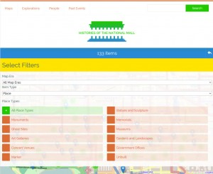
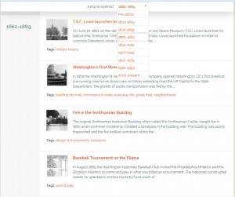
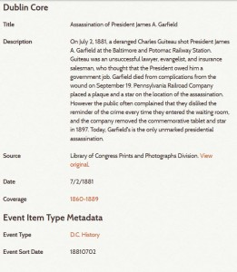

{kind=link}

To uncover the variety of actors and activities that have occurred throughout the Mall’s history, the content team chose people (famous and little-known), places (existing and past structures), and events (nationally- and locally-important) as visible categories for users to browse, that were geolocated when appropriate, and assigned a time period. The content team created an Omeka item for each person, place, and event, and began building a substantial digital collection in the project’s first year.
With many hands involved in the process of researching and creating items, the team developed guidelines for using and interpreting Dublin Core fields to ensure metadata consistency across the entire site. We added custom item types and custom metadata fields. Each item’s basic description addressed its place in the Mall’s history. Other fields widened the interpretive scope of the item beyond the Mall. Using Omeka’s Simple Vocab and Search by Metadata plugins, we implemented controlled vocabularies that allowed the items to be linked via the metadata fields for time periods (coverage), creators, occupation, place types, and event types. The content team discussed and debated terms in each controlled vocabulary list.
For “Places,” we added a “type” field for identifying sites and selected one of eleven categories, such as statues and sculpture, monuments, office buildings, or unbuilt structures on the map.
For “People,” we categorized individuals with general descriptions of their roles in Mall history through the “occupation” field. We created twenty categories to identify activists, architects, surveyors, or politicians. If a person played multiple roles related to Mall history, a second input was added with a second occupation category.
Similarly, for “Past Events,” we categorized each happening by one of ten types, including, marches and rallies, inaugurations, openings and dedications, or cultural gatherings.
{kind=link}

To show change over time, we made use of the Dublin Core coverage field. Each item was assigned an era in the coverage field, and when available, we also added a date in the Dublin Core date field. Starting with Pre-1800s, we created nine eras defined in 30-year chunks, that continued to the present. In some cases, to accurately represent a long process such as the construction of a monument, we selected more than one era. We created this controlled vocabulary in the coverage field, which then allowed for temporal linkages across the entire collection of items. The Search by Metadata plugin made these connections possible, by allowing a user to browse all of the items from those specific time periods.
{kind=link}

When testing an early version of the site, the content team noticed that when viewing the list of events by eras, the individual events were not sorted in chronological order. To make a more accurate version of a timeline, the team added another metadata field for the Event item type: “sort date.” This new field required dates to be entered a second time in a machine-readable format (YYYY/MM/DD) that the web designer used to create a list of events in chronological order. Importantly, this field remained visible only in the admin side.
Tracking the progress and development of items was the job of the Project Manager. Drawing upon the team’s secondary and primary research, and discussions in project meetings, she created and updated lists of possible people, places, and events using virtual whiteboards in the Basecamp project management site. Items were assigned to team members, who drafted the text and selected a representative image. Each item was reviewed multiple times by other content team members and one director before publishing the item.
At the end of its first year, Histories contained nearly 280 items. People, places, and past events comprised most of the collection, while other items represented primary sources that helped answer questions posed in the Explorations section.